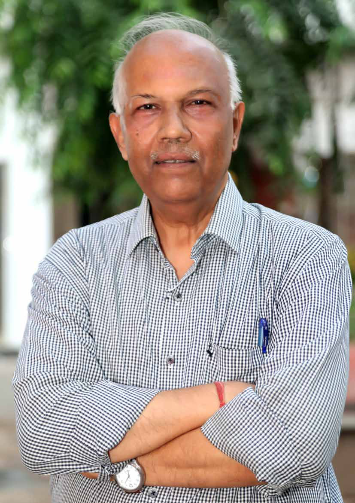
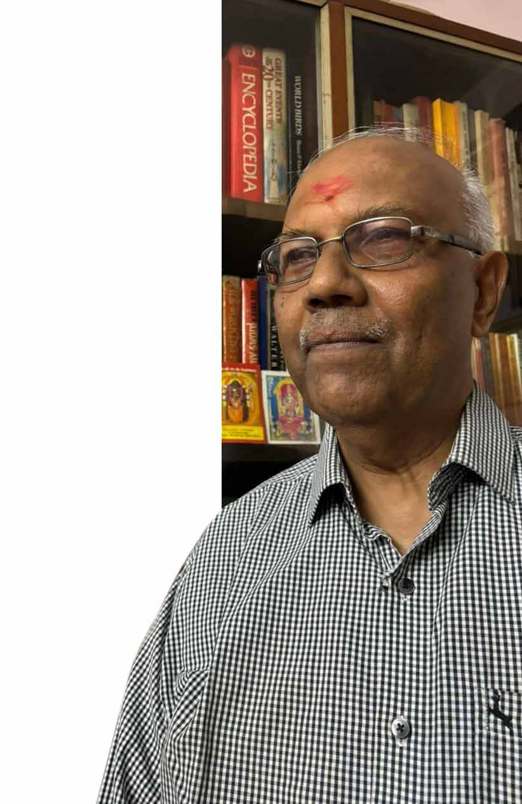
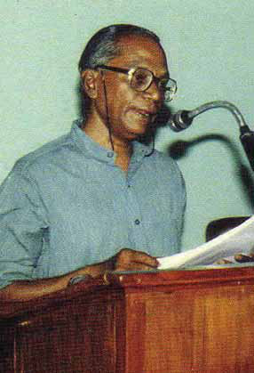
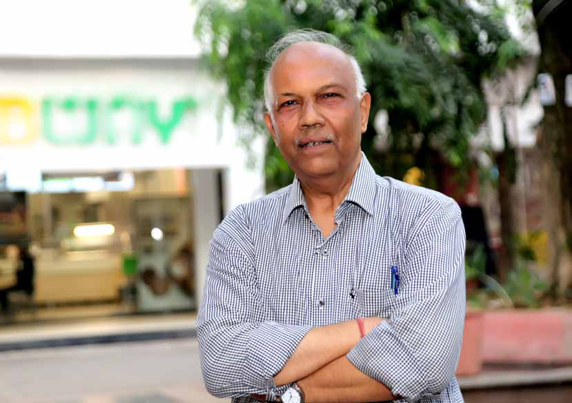
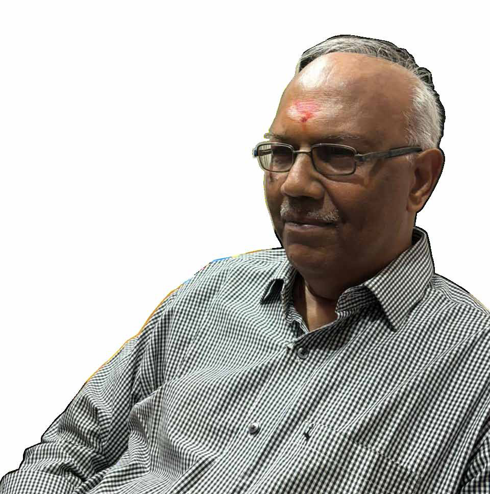
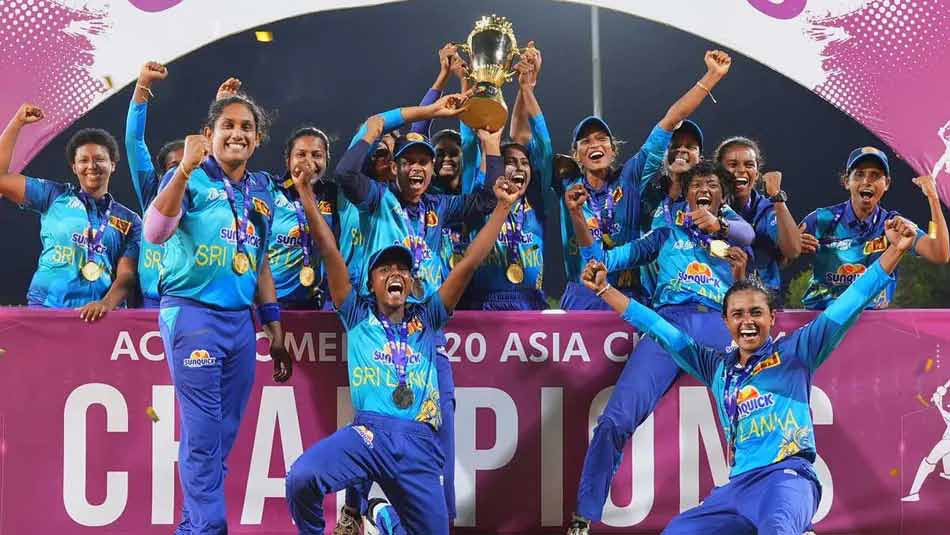
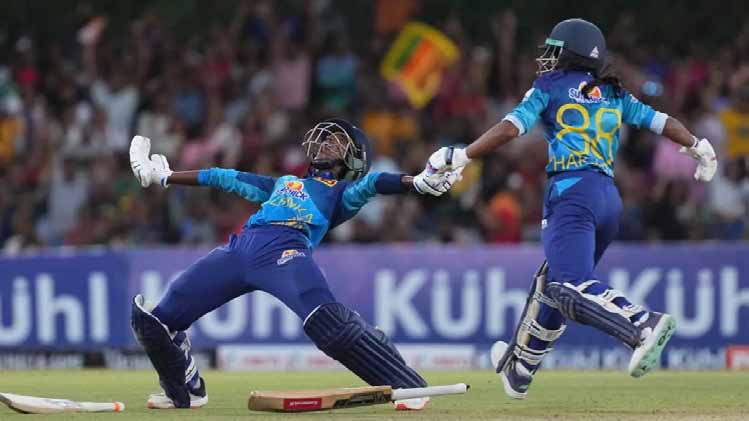
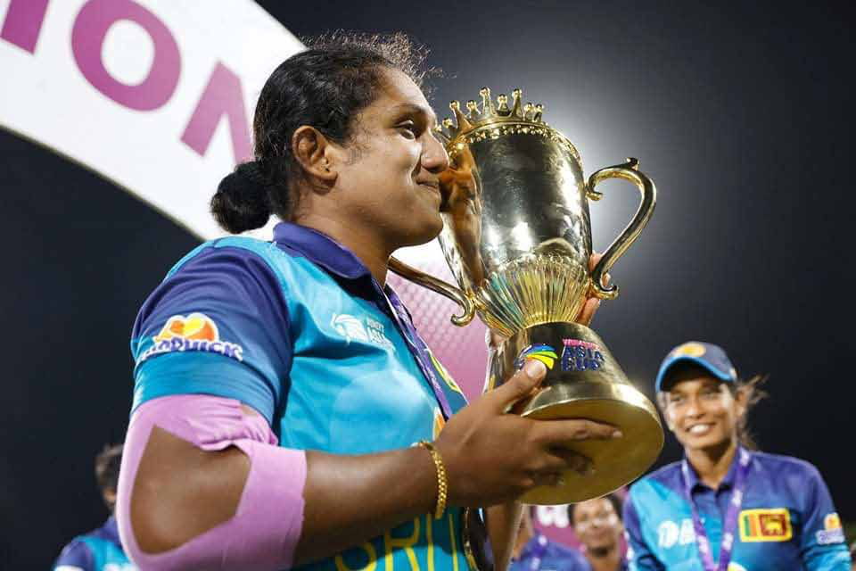
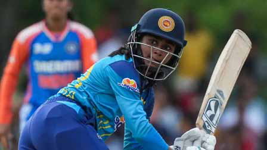

LTTE Turning Its Weapons Against the Tamil Community It Claimed to Represent Laid the Foundation for Its Destruction:
LTTE Turning Its Weapons Against the Tamil Community It Claimed to Represent Laid the Foundation for Its Destruction:
Jaffna Monitor hellojaffnamonitor@gmail.com 5 M . R. Narayan Swamy, the legendary journalist, needs no introduction. Born and raised in Delhi to Tamil-speaking parents, his interest—or rather his fate—with Tamil militants, particularly the LTTE, grew naturally. As an Indian, he is credited with writing some of the finest literature on the LTTE, surpassing even Sri Lankan authors. In 1994, he published "Tigers of Lanka: From Boys to Guerrillas," a mammoth work detailing the LTTE's growth from a group of young militants to a sophisticated war machine. This book is often considered the unofficial biography of the LTTE. In 2003, he wrote the unofficial biography of Prabhakaran, the LTTE supremo. While his first book was well-received by the upper echelons of the LTTE, his second book did not go over as well due to its critical elements. After the LTTE's military annihilation in May 2009, he published "The Tiger Vanquished: LTTE's Story" in 2010, which is essentially a collection of articles he had written. Fast forward to 2024, after a hiatus of almost one and a half decades, our finest writer is coming out with his latest (which he says will be his last) book, likely titled "The Rout LTTE Turning Its Weapons Against the Tamil Community It Claimed to Represent Laid the Foundation for Its Destruction: Cover Story BY: Our Special Correspondent M. R. Narayan Swamy
Jaffna Monitor hellojaffnamonitor@gmail.com 6 M. R. Narayan Swamy

Jaffna Monitor hellojaffnamonitor@gmail.com 7 of Prabhakaran." The key difference is that while his earlier works in 1994 and 2003 were written when the LTTE and its supremo were at their peak, and Prabhakaran was regarded by some as a reincarnation of the sun god, now the LTTE is done and dusted, and Prabhakaran is just a chapter in history. We are privileged to feature an interview with M. R. Narayan Swamy in this issue as our cover story and the Jaffna Monitor is immensely honored that this is the first interview he is giving regarding his latest book, "The Rout of Prabhakaran." How did your journey as a journalist begin, and what sparked your initial interest in Sri Lanka and the LTTE, considering your background as a Delhi-born, Delhi-settled journalist? Over the years, how did your tryst with covering the Sri Lankan conflict and the LTTE evolve? I pursued my passion for journalism, which I had developed during my school years, in 1978 at the age of 19, soon after graduating from Delhi University. When Sri Lanka became a major news story in 1983, most of the literature produced by Tamil militant groups was in Tamil. Naturally, not every journalist in Delhi could read it. Although I was born and raised in Delhi, I studied Tamil, my mother tongue, in school, though my command of the language was not as strong as that of Tamil speakers from Tamil Nadu or Sri Lanka. Tamil militants were happy to converse in Tamil with journalists since not everyone from their ranks was comfortable in English. 1984, I wrote to the LTTE in Madras (now Chennai) asking for their literature. I received some booklets and a letter from Nadesan, who promised to keep sending literature. However, he never did. My interest in Tamil militancy deepened in the mid-1980s, which is also when I first met Prabhakaran in Delhi. Over time, I met many militant leaders at various levels. My first visit to Jaffna, Sri Lanka, took place in August 1987, the day the LTTE surrendered some weapons. Since then, I have visited Sri Lanka, including the north and east, dozens of times. Through reading and repeated interactions with various actors in Sri Lanka, I learned more and more. Knowing Tamil was of immense help. Learning is a never-ending process. I must emphasize that Sri Lanka was never my main work; it became a passion. I primarily wrote on and edited issues related to India. Based on your extensive research and interactions, what are your opinions on the positive aspects of Prabhakaran and the LTTE you observed? Prabhakaran and the LTTE had both positives and negatives, which are easier to observe now with time. Irrespective of how one judges Prabhakaran, I am convinced it was his personality that kept the LTTE united and fighting fit for such a long time. Due to various factors, some more evident after his death, he exuded a charisma that was appealing and motivating to his followers. He had the ability to convey that he was willing to give his everything for Tamil Eelam; everyone was expected to do the same. His refusal to compromise, while it proved negative in the long run, played a positive role in the short run. I am not delving into Prabhakaran's negatives since your question is about his positives.
Jaffna Monitor hellojaffnamonitor@gmail.com 8 In your first book, 'Tigers of Lanka,' you depicted the LTTE as an almost undefeatable force. How do you perceive the dramatic shift to their complete eradication, and what factors contributed most significantly to this change? How has this development altered your understanding and interpretation of the conflict and Prabhakaran's legacy? I am not sure if I ever actually said that the LTTE was undefeatable. However, I was convinced for a long time that Sri Lanka would find it very tough to overcome the LTTE militarily. This impression was shared by significant sections of the Sri Lankan military and, by extension, the establishment in Colombo. I did write that no solution to the ethnic tangle would be possible without Prabhakaran. In a way, I was proved right. If Sri Lanka had defeated the LTTE militarily but Prabhakaran had escaped, it would be widely believed that the war was still on, even if the war theater itself had gone silent. In the weeks and days leading to his death in May 2009, this was indeed a major worry for the Sri Lankan military. Sarath Fonseka, then army chief, insisted that without knowing Prabhakaran was dead, it could not be deemed that the war had been won. If someone were to ask me to give a single-word reply to why Prabhakaran and the LTTE were destroyed, my answer would be: Prabhakaran. Prabhakaran's inability to grasp the larger picture, his failure to unite Tamils who disagreed with him, his lack of knowledge of geopolitics,

Jaffna Monitor hellojaffnamonitor@gmail.com 9 his nihilistic attitude, and his refusal to see the benefits of a negotiated settlement all contributed to the demise of what was once viewed as a never-say-die outfit. This forms the core of my forthcoming book. In a way, this is also an immense tragedy because it has left the Tamil community in Sri Lanka almost on its knees post-2009. Former LTTE cadres admit this. In the preface of your upcoming book, The Rout of Prabhakaran, you describe it as a 'post-mortem' of Prabhakaran, marking a significant departure from your earlier works. What motivated you to write this new book at this particular juncture? My first book, Tigers of Lanka, on the origins and growth of Tamil militancy, was published in 1994. My unauthorized biography of Prabhakaran, Inside an Elusive Mind, followed in 2003, six years before he perished in battle. In 2010, I released my third book, The Tiger Vanquished: LTTE's Story, a collection of my news stories published over the decades, along with a comprehensive overview of the rise and fall of the LTTE. Now, with 15 years having passed since Prabhakaran's death and with so much new information available and more emerging, I felt a political autopsy was needed. This new book will not be the last word on Prabhakaran, but I hope it adds to the understanding of his complex character and the Tamil struggle. If and when someone writes a fair and comprehensive biography of the Tamil struggle, I hope my books will prove useful in some ways. How do you see the transition of Prabhakaran from a powerful figure to just a chapter in history, and what do you hope readers will take away from this post-mortem analysis? It is a great tragedy that a man who once controlled a third of Sri Lankan territory and almost two-thirds of its winding coastline ended up in an area less than the size of a soccer field. This fact alone serves as a stark commentary on Prabhakaran and the LTTE. The history of the LTTE is replete with immense sorrow, huge betrayals, tremendous disappointment, and vast human suffering. One may or may not admire Prabhakaran, but there are hard questions that need to be asked and answered. I have attempted to address these in my upcoming book. I am afraid my assessment will not paint a very admiring picture of the LTTE's founder leader. However unpleasant this may sound, the truth, as they say, is often bitter. For your writings about the LTTE and Sri Lanka, including your first book, Tigers of Lanka (1994), and others, who among the Sri Lankans, especially Tamils, helped you? Many Tamils in and from Sri Lanka have gone out of their way to help me when I wrote my books. I don't want to name those still S. Sivanayagam

Jaffna Monitor hellojaffnamonitor@gmail.com 10 alive since they may or may not want it, but there is no harm in naming those who are no more. Among them, the late S. Sivanayagam stands out. He edited the Saturday Review weekly from Jaffna in the 1980s and was instrumental in my research for Tigers of Lanka. He pointed out the lack of published literature on the origins and growth of Tamil militancy in Sri Lanka. He provided access to the entire bound volumes of Saturday Review at his Besant Nagar residence in Chennai. These volumes were a treasure trove of information, giving me a solid foundation in the events in Tamil areas during the 1970s and 1980s. He also guided me on which books to read to gain a deeper understanding of the subject. Additionally, the late V. Balakumar, Shankar Rajee, and K. Pathmanabha provided me with valuable insights into Sri Lankan Tamil society and the LTTE. There were plenty of others, but many of them are still active in politics. I owe a lot to them and also to numerous ordinary Tamils who, in their own way, provided me with valuable nuggets that played a critical role in understanding the larger picture. How do you respond to critics who argue that your earlier works may have romanticized the LTTE and its supremo? Romanticized Prabhakaran and the LTTE?! I was never a fan of either, so how could I have romanticized them? In any case, Prabhakaran did so many amazing things, both positive and negative, that his actions spoke for themselves. There is no need to romanticize or demonize him. Professionally, after more than four decades in journalism, I am still a reporter at heart. Good journalism does not believe in romanticizing a historical figure. Let me cite one example. While writing my first book, someone who knew Prabhakaran insisted that he sharpened his skills by shooting wild monkeys between their eyes. But not one other person confirmed this, so I dropped it. If I were romanticizing the man, I would have added this, and it may have become gospel truth over time. Do you think Prabhakaran's vision for Tamil Eelam was Realistic, or was it fundamentally flawed from the outset? My answer is based on the present. In retrospect, man is always wise. I am sure the Tamil community had a cause to fight for when it all began, even if some of the methods were questionable. It will be nearly impossible to pinpoint when this positive factor began to go astray. Even if one assumes that the goal was realistic at one point, it ceased to be a realistic proposition later. But it does not matter what you and I think. Prabhakaran thought it was a realistic goal, so he went on and on. The rest, as they say, is history. The first three Eelam wars ended with significant gains for the LTTE. Where do you think they went wrong in the fourth Eelam war Despite fighting the same Sri Lankan army? I believe I have answered part of your question earlier. Nevertheless, I can add something. You may recall one of Lenin's famous writings: "One Step Forward, Two Steps Back." All leaders must know how to forge ahead and when to step back. Both are integral parts of a
Jaffna Monitor hellojaffnamonitor@gmail.com 11 struggle. You cannot remain fixated on a single method. In 2006, when Eelam War IV began, Prabhakaran had been fighting for 23 long years, discounting the years preceding 1983. Most of those who started off with him were either dead or had left. Looking back, how long could one go on and on? Yet Prabhakaran thought he could not only wage war again but win as well. This was a colossal miscalculation. In a way, Prabhakaran was a prisoner of his own seeming invincibility—an impression that many others also shared in Sri Lanka and beyond. The picture changed irrevocably from 2008 onwards. Did you ever imagine that the LTTE would turn its weapons against its own people, including forcibly conscripting young children and leading countless innocent Tamils to their tragic end at Mullivaikal in the final war? How do you explain this drastic downfall and betrayal of the Tamil cause? The LTTE turning its weapons against the very community it claimed to represent was a significant crime that laid the foundation for its eventual destruction, even if this was not fully realized by many in the 1980s. Besides many innocent Sinhalese and Tamils, the LTTE killed innumerable Tamils—militants, moderates, and civilians—simply because they disagreed with the Tigers and Prabhakaran. In a way, the LTTE chief kept undermining himself in the long run. I was told by credible sources that before

Jaffna Monitor hellojaffnamonitor@gmail.com 12 the LTTE was destroyed, Pottu Amman, the intelligence wing chief of the LTTE, confided to some colleagues in the final days of the last war about three major blunders he felt the LTTE had committed. One of these was the large-scale and forced conscription of children, particularly from poor families, which left the helpless parents distraught and the children deeply unhappy. But the blunders the LTTE committed were more than what Pottu Amman admitted to. The question is: who made these blundering decisions? Surely, it was Prabhakaran. What do you believe motivated Prabhakaran to provoke the government and start the war in 2006, despite the LTTE losing its eastern commander and 6,000 cadres? How do you think Prabhakaran convinced himself to initiate the conflict when the LTTE was militarily weakened? This is a good question, but it is not easy to answer. Some of the replies above might help. That Prabhakaran still thought he could win despite losing almost the entire eastern wing of the LTTE speaks poorly of his understanding of military affairs. The split in the LTTE was a boon for Colombo. Balasingham, certainly more mature than Prabhakaran, warned of disaster if the LTTE went to war again. However, most people in the higher echelons of the LTTE turned out to be 'yes men' who could not or did not want to persuade their leader to think differently. The end result was a monumental disaster. What is your assessment of the key factors that led to the LTTE's downfall? I think I have already explained this, but I will make one point here. Despite his limitations, Anton Balasingham desired that the Tamil Eelam campaign should see a positive end in his lifetime. This is why he was livid when the LTTE killed Rajiv Gandhi. He also had a far better understanding of global affairs and what the West and Asian countries like India and Japan desired regarding Sri Lanka. None of them wanted Sri Lanka to break up. The epoch-making events of 9/11 changed much of the world's thinking about terrorism and insurgency. Prabhakaran, however, lived in a world of his own Do you believe that Sinhala hardliners have abandoned violent tactics towards Sri Lankan Tamils, especially in light of historical events such as the burning of the Jaffna Public Library and the pogroms of 1977 and 1983? Additionally, have you observed any positive initiatives or approaches by the Sri Lankan government towards the Tamil community in recent times? When the Sri Lankan economy crashed, leading to Gotabaya's flight and widespread shortages, many ordinary Sinhalese felt this was karmic suffering for not raising their voices against government-induced shortages of essential goods in the north and east for a long time. This feeling reflects the changes in the Sinhalese psyche. However, there is no doubt that a quarter century of bloodshed has divided Sri Lanka into 'us' and 'them,' a situation that unfortunately persists among many. The so-called Sinhalese hardliners do not want to make any meaningful concessions because they foolishly believe this will be a stepping stone to Tamil Eelam. Unless this negative thinking changes, I don't see much
Jaffna Monitor hellojaffnamonitor@gmail.com 13 hope for improving ruptured ethnic relations. Many believe the Sri Lankan army won the war with the help of the Indian government and its tactical support. What do you think motivated the Indian government to provide this assistance? I don't agree that Sri Lanka won the war with the help of the Indian government. With the kind of material help India was willing to provide, Sri Lanka probably could not have won the war, certainly not in 2009. The main military support for Colombo came from many countries, including Iran, Israel, Pakistan, and China. The dominant help from India and the US was in the field of intelligence, which was undoubtedly very valuable. India also choked the sea link between Tamil Nadu and northern Sri Lanka towards the end of the war. As far as I know, the last LTTE boatload, ferrying medicines from Tamil Nadu to Prabhakaran's lair, went on May 8, 2009. Fifteen Black Tigers died in this effort, fighting the Sri Lankan Navy at sea. Regardless of whether the Congress or the BJP ruled India, there was a consensus that Sri Lanka should not be allowed to break up. Also, remember that the most powerful person in India when the LTTE finally crashed was a woman who had been widowed by Prabhakaran in 1991 when he had Rajiv Gandhi killed. As an Indian, how do you perceive the impact of Rajiv Gandhi's assassination on the LTTE and Sri Lankan Tamils' relationship with the mainstream? What were the implications of this senseless attack ordered by Prabhakaran? Among the most foolish things the LTTE and Prabhakaran committed was the assassination of Rajiv Gandhi. If there was one act of Prabhakaran that Balasingham never forgave, it was this. More than anyone else, Balasingham realized the disastrous long-term consequences of this mindless action. All his fears proved absolutely correct. After initially denying that they were anyway involved in the gory killing, Prabhakaran finally admitted the truth to Balasingham. This one action totally and irrevocably breached whatever links the LTTE may have had or could in the future have had with the Indian State and, to a great extent, with the Indian people in general. The reality is that Prabhakaran wanted to have the cake and eat it, too. He wanted to kill Rajiv Gandhi, and he believed that no one would be able to link it up with the LTTE. I will not hesitate to say that if the world finally turned against the LTTE dream of Tamil Eelam, then the Rajiv Gandhi assassination (and some other specific killings) was a key factor. And look at destiny: the woman Prabhakaran made a widow in 1991 was the most powerful person in India when the LTTE finally went down. You could compare this assassination with the way Yasser Arafat went and hugged Saddam Hussein after the latter invaded and gobbled up Kuwait, losing forever the decades of invaluable financial and other support from the oil-rich Gulf countries. There are diverse opinions regarding Anton Balasingham's role within the
Jaffna Monitor hellojaffnamonitor@gmail.com 14 LTTE. As the organization's chief theoretician, critics argue that despite his private disappointment with Prabhakaran's brutal actions-such as the assassinations of Rajiv Gandhi and Premadasa and numerous bombings- Balasingham continued to serve as the LTTE's spokesperson until his unofficial suspension. Notably, he never publicly criticized Prabhakaran's methods. Critics contend that if Balasingham indeed disapproved, he should have left the organization but remained for personal benefits within the LTTE diaspora. From your responses, it seems you hold a high opinion of Balasingham. However, I may be wrong in my interpretation. Given these perspectives, how do you view Balasingham's role within the LTTE? Do you believe he was genuine in his political stance, or did he spend his life justifying Prabhakaran's violent tactics? I have absolutely no special love or admiration for Balasingham or anyone else in the LTTE. While Balasingham may have had reasons for not leaving the LTTE, which can be easily speculated, he did not wait until just before his death to speak out against Prabhakaran. He had been critical of Prabhakaran to many people, including fellow Tamils and foreigners. As someone who had seen more of life and certainly understood international affairs better than Prabhakaran, he recognized the dangers of the path Prabhakaran was intent on pursuing.

Jaffna Monitor hellojaffnamonitor@gmail.com 15 All the criticism leveled against Balasingham is justified. However, this does not diminish the truth he spoke, which led to differences with Prabhakaran at a certain stage. To my knowledge, Prabhakaran was aware that Balasingham was critical of him on some if not all, issues. Incidentally, I have discussed the issue of Balasingham in some detail in my upcoming book. Thousands of Sri Lankan Tamils still live in refugee camps in Tamil Nadu and other states, with those who arrived as refugees and those born in these camps not being granted respect, citizenship, or identification, remain stateless. This situation starkly contrasts with other countries where Sri Lankan Tamils have migrated and become influential forces. Do you think this situation is right or morally acceptable? I do not condone the state of affairs ordinary Sri Lankan Tamils find themselves in Tamil Nadu's camps. Morally, this is a very sad situation. Most Tamils from Sri Lanka now in the camps are from the lower strata of society, which makes their condition more pitiable. However, do note that some known pro- militants, including those who were with the LTTE, lead a normal life in Tamil Nadu and beyond. Unlike the West, which grants Tamils citizenship, I don't think India will do that. India does not grant citizenship to the tens of thousands of Tibetans and Afghans who live in the country either. The ethnic unrest initially began as a movement for Tamil liberation before evolving into the LTTE's struggle. Considering this historical context and acknowledging that the majority of Tamils believe the problems that drove them to take up arms remain unresolved, how do you view the current state of these issues? Additionally, what do you believe the Sri Lankan government, the What should the Indian government and Tamil politicians do to address these unresolved issues? A post-mortem, with a positive framework of mind, is needed from everyone. The Sri Lankan State must admit that it has committed many wrongs overtime against the Tamils. The Tamil leaders should put forward concrete ideas within a united or federal set-up (the terminology is not important) outlining what should be done for a better tomorrow. This discussion should not be limited to power- sharing issues alone. Major mistakes have been made on both sides of the ethnic divide, and there seems to be a culture of impunity on both sides. If there are said to be war criminals in the military (serving or retired), many of the LTTE fighters who surrendered and are alive can also be classified similarly. Colombo never apologized for the thousands of deaths of innocents during the JVP insurgencies, so it may be too much to expect them to do so regarding the Tamils. India can and must assist in this process but without being interventionist.
Jaffna Monitor hellojaffnamonitor@gmail.com 16 Can the LTTE ever re-emerge? It cannot. The LTTE is dead and gone. The LTTE is not an electrical equipment that can be switched on or off at will. The LTTE and other groups emerged within a specific geopolitical framework at a certain historical juncture. There was a Prabhakaran (excluding other militant leaders for now) who provided shape and leadership to the group. The Tamil cause also enjoyed moral legitimacy in 1983. All of this no longer exists. Prabhakaran is revered by many of his supporters and refuted by others. Considering both perspectives, what is your comprehensive assessment of his legacy and impact? There could have been no LTTE without Prabhakaran. However, as I say, while he undoubtedly had leadership skills, he lacked some other qualities vital to lead a movement to a logical conclusion. It is good to revere a leader, even to glorify one, but a brazen refusal to accept criticism can never help. Mahatma Gandhi is India's Father of the Nation but is subject to many critical analyses in his country. If you need to know the bottom line of Prabhakaran's legacy, you must talk to former LTTE guerrillas in confidence. One ex-woman fighter told me that the Tamils stood on their legs in 1983; a bloody quarter century later, they stare at an uncertain future. Is this why this war went on for so long and why so many thousands, combatants and non-combatants, perished? Although the LTTE has been dismantled, the ideologies of the LTTE and its leader, Prabhakaran, which we can term "Prabhakaranism," still persist among the Sri Lankan Tamils... This is a natural phenomenon. Mahatma Gandhi is no more, but Gandhism as an idea exists. But it does not have the same potency. One reason "Prabhakaranism," as you describe it, still exists is because a significant section of the society, either out of loyalty or fear or both, strongly believed in it, thinking for a long time that it would yield positive results. It turned out to be the opposite. It will be difficult for people who believed in the idea of Prabhakaran and Tamil Eelam to shun it overnight. But many have. Over time, the idea will lose potency. As more and more truth of whatever happened in the Tiger land over the years and decades comes out, more and more people will drift away. The hardcore supporters will remain, more outside of Sri Lanka and less within the island nation. What is your perspective on the role of the Tamil diaspora in the LTTE's operations and their ongoing influence in Tamil politics today? The diaspora was the creation of the 1983 pogrom and the subsequent Tamil insurgency. One Sri Lankan Tamil nationalist who was with Prabhakaran almost until the latter's end told me that the birth of a huge diaspora was perhaps the biggest gain of what is called the Sri Lankan problem. It is a pity that dominant sections of the Tamil diaspora lived in the West and enjoyed its democratic space and opportunities but did not raise their voices against even the visible flaws of the LTTE and its excesses. It is possible they did not want to or could not afford the risk. Either way, the diaspora indirectly and
Jaffna Monitor hellojaffnamonitor@gmail.com 17 unwittingly contributed, although they may not have wanted it. Of course, there were others who spoke against the LTTE and paid a price for their courage. In hindsight, what could the Sri Lankan government have done differently to prevent the rise of the LTTE? This is now an academic question. Sri Lanka had many opportunities to come to an understanding with moderate Tamil leaders in a bygone era, with some give and take. Looking back, some Sinhalese leaders were too narrow-minded. They could have learned from the way different governments in India dealt at different times with what can be called the nationality question. India is not a perfect example, but it is not a bad example either. What tips and guidance would you offer to young writers and Journalists in Sri Lanka who aspire to cover complex and sensitive Topics, much like you have done throughout your career? As I said in the beginning, Sri Lanka was a passion and not my bread and butter. I have covered a variety of national and international issues, including the civil war in Nicaragua, the PLO National Council meeting in Jordan, the assassinations of Indira Gandhi and Rajiv Gandhi, the Bhopal gas disaster (at that time the world's worst industrial disaster), international events in India and abroad, the Indian prime ministers' visits abroad (among the toughest assignments), as well as numerous elections, political upheavals, communal strife, disasters, and more in India. I have met Yasser Arafat, the Dalai Lama, and US-based Khalistani leaders, besides top Indian political leaders. I have written widely on diplomatic issues. I come from a simple middle-class family and don't have great academic credentials. I read constantly to keep myself up to date on various issues. My advice to young journalists is to keep working hard and seize every professional opportunity that comes your way with both hands. Do not be biased for or against anyone professionally; be humble and have empathy for the less privileged. A reporter should take pride in doing even the smallest of stories. Anyone can commit an error (I have made my share of mistakes), but try your best to check and cross-check matters of importance. Also, learn as many languages as you can. Reading and exposure to other cultures will broaden your worldview. Don't chase money. My monthly stipend when I took to journalism in 1978 was 400 rupees. I survived because I lived with my parents. After eight years of slogging in UNI, my salary was a paltry 2,600 rupees. While in Bhopal for 16 days covering the gas disaster, our daily allowance was so meager that I could only afford lunch for 7 rupees, while most journalists from Delhi stayed in good hotels. We went daily to Hindu cremation grounds and Muslim burial sites to count the rising number of dead (as the government was not giving out figures) on cycle rickshaws. I saw money and comfort only after joining the AFP. More than anything else, to succeed in life, you need the blessings of your parents, guru, and divinity. Pride and arrogance will cancel this out.
Jaffna Monitor hellojaffnamonitor@gmail.com 18 I n a sensational showdown at the Rangiri Dambulla Stadium, Sri Lanka's women's cricket team etched their names in history by securing their inaugural Women's T20 Asia Cup, triumphing over India by eight wickets in a riveting finale destined to be remembered for years. This victory, achieved with eight balls to spare, represents a monumental milestone in Sri Lankan cricket and establishes a new standard for the nation's women athletes. Sri Lanka had previously reached the Asia Cup finals in five of the tournament's eight editions yet consistently fell short, losing all five finals to India. However, this time marked a departure from the past. Demonstrating an exceptional brand of cricket, the Sri Lankan women's team overcame a formidable Indian side, setting a new record for the highest successful chase in T20 Internationals for the team. Set a target of 166, it initially looked like India's game. Sri Lanka had never chased such Sri Lanka's Women Make History with First T20 Asia Cup Triumph sports

Jaffna Monitor hellojaffnamonitor@gmail.com 19 a high total in T20 Internationals, let alone in a final. But the Sri Lankan women believed in themselves and completed a comprehensive win. The victory was orchestrated by captain Chamari Athapaththu's explosive 61 and Harshitha Samarawickrama's unbeaten 69. Kavisha Dilhari's all-round performance, including a crucial 30 not out off 16 balls. India's formidable total of 165 for 6, led by Smriti Mandhana's 60, seemed daunting. Yet, Chamari Athapaththu's aggressive batting against India's left-arm spinners turned the tide. Her onslaught in the powerplay, which included two sixes and two fours off Tanuja Kanwar, set the tone for the chase. When Chamari was bowled by Deepti Sharma for 61, it seemed like Sri Lanka might falter, as she had been the team's main match-winner for over a decade. But number three batter Harshitha Samarawickrama kept fighting. An unbroken 73-run partnership for the third wicket followed between Harshitha and Dilhari, as Sri Lanka pulled off a sensational win. Harshitha Samarawickrama's composed innings proved pivotal after Chamari Athapaththu's departure. She capitalized on India's misfields and dropped catches, including a crucial one by Harmanpreet Kaur when she was on 45. Harshitha Samarawickrama was unbeaten on 69 off 51 balls with six fours and two sixes. Kavisha Dilhari finished 30 not out, having faced 16 balls with one four and two sixes. Dilhari's powerful hitting in the final overs ensured a comfortable win for Sri Lanka, sharing an unbeaten 73-run stand with Samarawickrama. This win is expected to be a significant boost for women's cricket in Sri Lanka. Sri Lanka Cricket announced a winning bonus of US$ 100,000 for the team. Better match fees and endorsements from sponsors are likely to follow. More than anything, the win is sure to inspire more girls to take up the game. A full house witnessed the final, and many young girls would aspire to follow in the footsteps of Chamari Athapaththu or Harshitha Samarawickrama.

Jaffna Monitor hellojaffnamonitor@gmail.com 20 The victory is a testament to coach Rumesh Ratnayake's transformative impact since his appointment in early 2023. Under his guidance, Sri Lanka has seen significant improvements in performance and morale. His emphasis on a positive, cohesive environment and focus on "one ball at a time" has paid dividends, with Sri Lanka achieving notable victories in both T20Is and ODIs. Last year, the team won series in England and South Africa, apart from beating New Zealand at home. Chamari Athapaththu's journey to this historic moment has been marked by perseverance and leadership. Holding the Asia Cup trophy amidst adoring fans, she symbolized the new era of Sri Lankan women's cricket. "That's over, now focus on the next thing," she said, embodying the team's forward-looking mentality. As Sri Lanka revels in this monumental achievement, all eyes are on the future. With the T20 World Cup on the horizon in October, the team, invigorated by their historic victory, is determined to maintain their winning momentum. This triumph signifies a new era for Sri Lankan women's cricket, inspiring future generations to take up the sport. The roaring crowd at the packed Rangiri Dambulla Stadium, united in celebration, showcased the burgeoning support and recognition for women's cricket in the nation.

